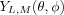
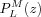

Spherical harmonics, tesseral harmonics.
v = spherharm(L,M,theta,phi) v = spherharm(L,M,theta,phi,'c') v = spherharm(L,M,theta,phi,'s')
spherharm returns the value of the normalised spherical harmonic

with non-negative integer L and |M| ≤ L. The Condon-Shortley phase convention
is used.
theta and phi are scalars or alternatively
array of the same size.
If 'c' or 's' are given, real linear combinations
of the spherical harmonics (so-called tesseral harmonics) are returned. For
the expressions, see below.
The following code plots the dependence on theta of
the axial spherical harmonics with L = 7 and M = 0.
theta = linspace(0,pi); phi = zeros(size(theta)); v = spherharm(7,0,theta,phi); plot(theta,v);
spherharm follows the Condon-Shortley phase convention
and implements the expression
with the associated Legendre polynomial  computed by plegendre.
If 'c' is specified, the function
is returned. If 's' is given, the function
is returned. Note that for the tesseral harmonics, the Condon-Shortley phase is not included.
The spherical and tesseral harmonics defined by the above expression are orthonormal.
clebschgordan, plegendre, wigner3j, wigner6j